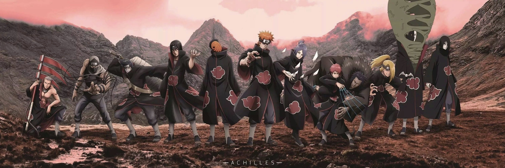

火影忍者 通用页
这个世上只要还有忍者的系统，也就不能建立和平的秩序。为了拯救珍视之人，才会产生战争，同时会孕育出仇恨，忍者就会被这份仇恨所利用，从而孕育出新的佩恩。自来也老师将结束这份仇恨的答案托付给了你，要靠自己去寻找，如果是你的话，一定能找到，我相信你。
这个世上只要还有忍者的系统，也就不能建立和平的秩序。为了拯救珍视之人，才会产生战争，同时会孕育出仇恨，忍者就会被这份仇恨所利用，从而孕育出新的佩恩。自来也老师将结束这份仇恨的答案托付给了你，要靠自己去寻找，如果是你的话，一定能找到，我相信你。